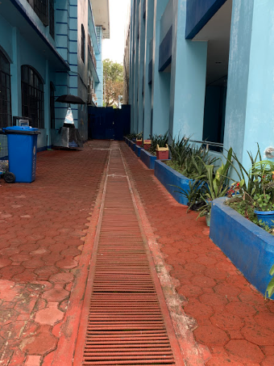
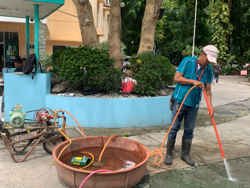
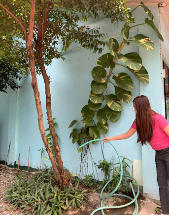

Urdaneta City University (UCU) implements a comprehensive rainwater harvesting system as a core component of its commitment to sustainable water resource management, directly supporting the Water and Infrastructure criteria of the UI GreenMetric World University Rankings. Each campus building is equipped with an integrated drainage and collection network designed to efficiently capture rainwater from rooftops and channel it into strategically located storage tanks. This system ensures that rainwater is maximized as an alternative water source, reducing dependence on potable water and promoting efficient resource utilization.
The harvested rainwater is systematically stored and distributed for multiple purposes across the campus. A portion of the collected water is directed toward nearby ponds and canal systems, contributing to groundwater recharge and supporting the surrounding natural ecosystem. This approach not only aids in water conservation but also aligns with environmentally sustainable drainage practices, helping mitigate surface runoff and reduce the risk of flooding within and around the campus.
| Water Recycling and Storage Infrastructure | |
|---|---|
| Recycled Water Collector Network | Alternative Distribution Channels |
|
Rainwater filtration and drainage pipelines on campus structures
|
 Storage systems and dedicated drainage leading to water reuse
|
In line with GreenMetric’s emphasis on efficient water use and conservation practices, UCU has designated specific campus facilities for the reuse of harvested rainwater. One of its primary applications is in toilet flushing systems, which significantly reduces the university’s consumption of treated potable water. In addition, the rainwater is utilized for landscape irrigation, ensuring that gardens, green spaces, and planted areas are consistently maintained without relying heavily on municipal water supply. It is also used for general cleaning and maintenance of campus facilities, further enhancing water-use efficiency across daily operations.
Through these integrated systems, UCU not only reduces water wastage but also promotes a culture of sustainable resource management among its stakeholders. The continuous use of rainwater for operational needs reflects the university’s commitment to embedding sustainability into its infrastructure and daily practices. Furthermore, the system contributes to improved campus resilience by helping manage excess rainfall, thereby reducing the risk of flooding, while also ensuring water availability during periods of limited supply.
| Example of Water Recycling Program | |
|---|---|
|
 |
 |
Beyond its operational benefits, the rainwater harvesting program supports ecological balance by maintaining green landscapes and contributing to biodiversity within the campus. The sustained availability of water for vegetation helps preserve the aesthetic and environmental quality of the university grounds, creating a healthier and more sustainable environment for students, faculty, staff, and visitors.
Overall, Urdaneta City University’s rainwater harvesting initiatives exemplify a proactive and integrated approach to water sustainability, aligning with the performance indicators of the UI GreenMetric World University Rankings and reinforcing the university’s role as a responsible institution committed to environmental stewardship and sustainable development.